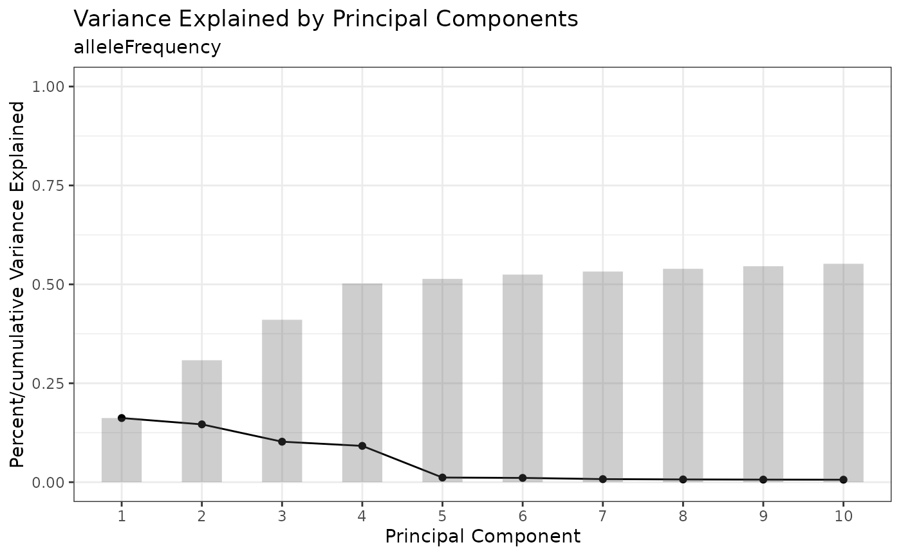
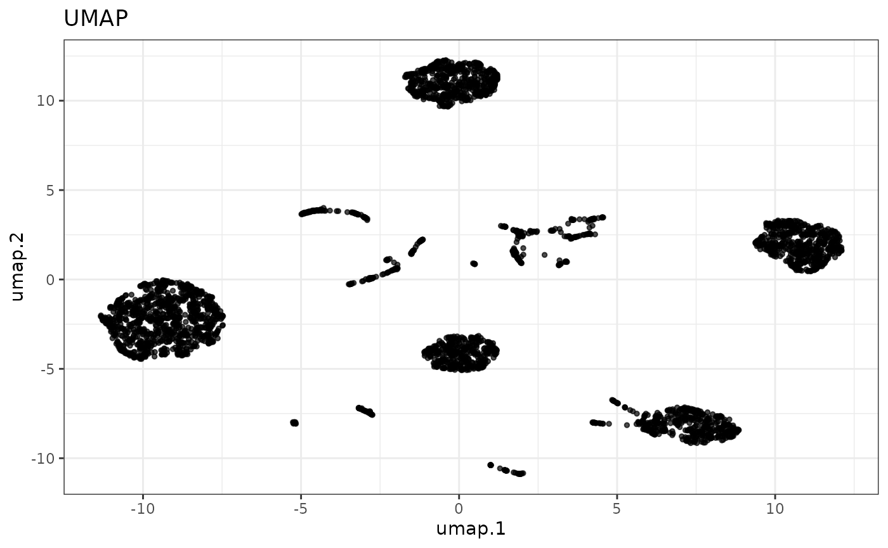
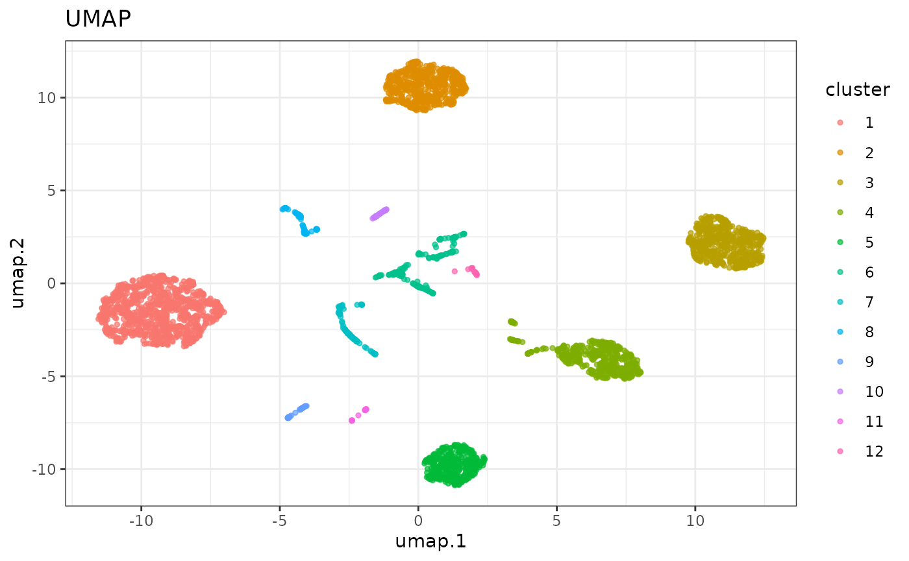
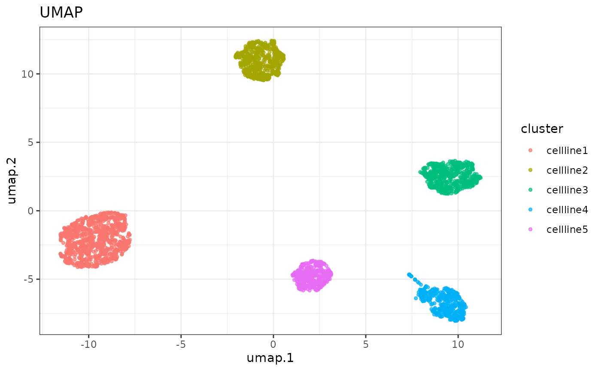
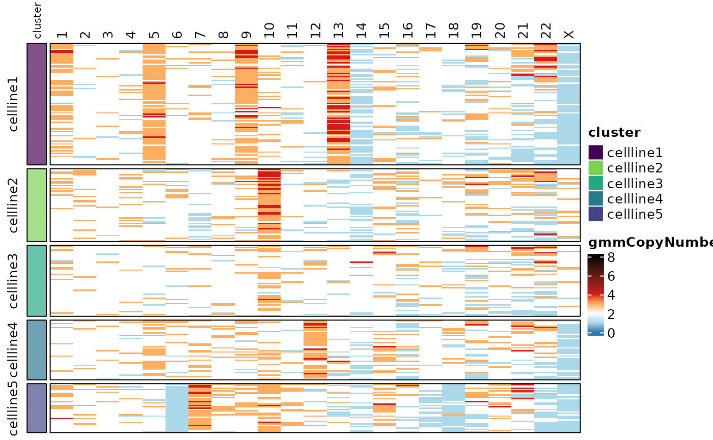
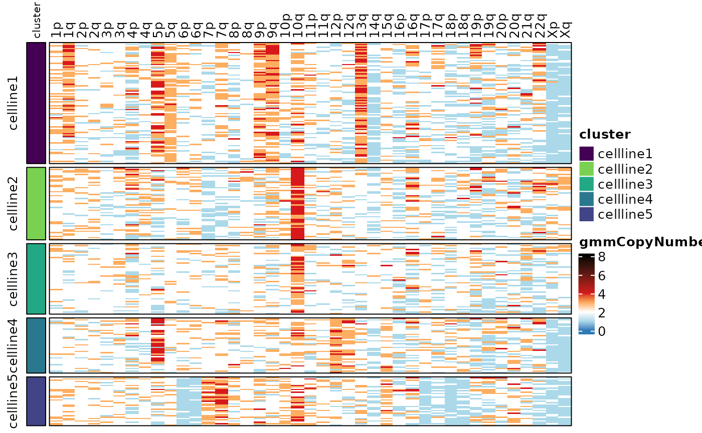

karyotapR Basic Workflow
Compiled on September 15, 2023
Source:vignettes/articles/karyotapR.Rmd
karyotapR.RmdSetup
Data Download
This guide uses the cell mixture experiment from the KaryoTap
publication (Mays,
2023). The Tapestri Pipeline .h5 output file is
available on Zenodo
and can be downloaded by [curl::curl_download()] or
directly from the website.
curl::curl_download(url = "https://zenodo.org/record/8305841/files/tapestri-experiment01-panelv1.h5?download=1",
destfile = "./tap-cellmixture.h5", quiet = FALSE)Basic Usage
Data Import
The cell mixture dataset is imported from the .h5 file
that is generated by the Tapestri Pipeline, which generates a new
TapestriExpriment object. This dataset comprises a mixture
of 5 cell lines with differing karyotypes and was processed on the
Tapestri instrument for single-cell DNA sequencing using Custom Oligo
Panel 261 (a.k.a. Panel Version 1). Setting the panel.id
parameter automatically assigns the correct probes to the
grnaProbe and barcodeProbe slots in the
object, which are used for special applications. Several useful
processes run automatically on import, indicated in the status messages.
For example, cytobands are automatically added to the probe metadata,
chromosome Y probes are automatically detected and moved to a specific
slot in the object (although now chrY probes exist in this panel), and
any special probes that do not target the endogenous human genome are
moved to their appropriate slots.
cellmix <- createTapestriExperiment("./tap-cellmixture.h5", panel.id = "CO261")
# ── Loading Tapestri Experiment ──────────────────
# • Sample Name: Teresa_s_cell_line_mix
# • Pipeline Panel Name: CO261_NYU_Davoli_03102021_hg19
# • Pipeline Version: 2.0.2
# • Date Created: 2021-09-15
# ── Metrics ──
# • Number of Cells: 3555
# • Number of Probes: 330
# • Mean Reads per Cell per Probe: 89.22
# ── Notes ── ℹ Adding cytobands from hg19.
# ℹ ChrY probe ID(s) not found in TapestriExperiment object.
# ℹ No non-genomic probe IDs found.Calling the object will print a summary of the contained data. The
TapestriExperiment class is built on top of the SingleCellExperiment
and SummarizedExperiment
classes, so they inherit their basic functionality and interface.
Calling colData() and rowData() will return
the metadata for the cells and probes/amplicons respectively.
cellmix
#> class: TapestriExperiment
#> dim: 330 3555
#> metadata(7): sample.name pipeline.panel.name ... date.h5.created
#> mean.reads.per.cell.per.probe
#> assays(1): counts
#> rownames(330): AMPL158802 AMPL146998 ... AMPL162086 AMPL161738
#> rowData names(8): probe.id chr ... cytoband arm
#> colnames(3555): AACAACCTAATAGTGGTT-1 AACAACCTAGTCCTAGTT-1 ...
#> TTGTAATGCTCGTACCTT-1 TTGTATCACACTTGATCT-1
#> colData names(2): cell.barcode total.reads
#> reducedDimNames(0):
#> mainExpName: CNV
#> altExpNames(1): alleleFrequency
#> barcodeProbe: not specified
#> grnaProbe: not specified
#> gmmParams(0):
colData(cellmix) # cell metadata
#> DataFrame with 3555 rows and 2 columns
#> cell.barcode total.reads
#> <character> <numeric>
#> AACAACCTAATAGTGGTT-1 AACAACCTAATAGTGGTT-1 60264
#> AACAACCTAGTCCTAGTT-1 AACAACCTAGTCCTAGTT-1 22455
#> AACAACCTATGGACGAGA-1 AACAACCTATGGACGAGA-1 51206
#> AACAACTGGCGCACTCTT-1 AACAACTGGCGCACTCTT-1 29616
#> AACAACTGGGACATAACG-1 AACAACTGGGACATAACG-1 17998
#> ... ... ...
#> TTGGTAACTCCATATCTT-1 TTGGTAACTCCATATCTT-1 44154
#> TTGTAATGCCTATAGCTC-1 TTGTAATGCCTATAGCTC-1 24469
#> TTGTAATGCGAGTGTGCC-1 TTGTAATGCGAGTGTGCC-1 45023
#> TTGTAATGCTCGTACCTT-1 TTGTAATGCTCGTACCTT-1 16216
#> TTGTATCACACTTGATCT-1 TTGTATCACACTTGATCT-1 18831
rowData(cellmix) # probe metadata
#> DataFrame with 330 rows and 8 columns
#> probe.id chr start.pos end.pos total.reads median.reads
#> <character> <factor> <numeric> <numeric> <numeric> <integer>
#> AMPL158802 AMPL158802 1 1479191 1479385 202832 49
#> AMPL146998 AMPL146998 1 6196653 6196900 112408 24
#> AMPL158817 AMPL158817 1 11832076 11832330 99472 22
#> AMPL158827 AMPL158827 1 17087135 17087388 1162986 304
#> AMPL158845 AMPL158845 1 24412922 24413191 1008 0
#> ... ... ... ... ... ... ...
#> AMPL161732 AMPL161732 X 128880366 128880635 568729 133
#> AMPL161734 AMPL161734 X 130415574 130415843 231144 49
#> AMPL161735 AMPL161735 X 135429800 135430069 156462 33
#> AMPL162086 AMPL162086 X 140993717 140993974 195494 47
#> AMPL161738 AMPL161738 X 142794979 142795248 400235 93
#> cytoband arm
#> <character> <factor>
#> AMPL158802 p36.33 1p
#> AMPL146998 p36.31 1p
#> AMPL158817 p36.22 1p
#> AMPL158827 p36.13 1p
#> AMPL158845 p36.11 1p
#> ... ... ...
#> AMPL161732 q26.1 Xq
#> AMPL161734 q26.2 Xq
#> AMPL161735 q26.3 Xq
#> AMPL162086 q27.2 Xq
#> AMPL161738 q27.3 XqAllele Frequency Clustering
We cluster on allele frequency to partition different cell lines represented in the experiment. First, we run Principal Components Analysis (PCA) and use the knee plot to identify the principal components (PCs) accounting for the most variation in the dataset.
cellmix <- runPCA(cellmix)
PCAKneePlot(cellmix)
Next, we run UMAP with the top PCs to embed them into two dimensions and plot the result.
cellmix <- runUMAP(cellmix, pca.dims = 1:4)
#> ℹ Running UMAP on: alleleFrequency.
reducedDimPlot(cellmix, dim.reduction = "umap")
Next, we partition the data into clusters using the dbscan method.
The eps parameter can be used to adjust the granularity of
the clustering. We can then update the UMAP plot with the clusters.
cellmix <- runClustering(cellmix, eps = 0.9)
#> ℹ Finding clusters in: alleleFrequency UMAP
reducedDimPlot(cellmix, dim.reduction = "umap", group.label = "cluster")
As expected, we have 5 major clusters corresponding to the 5 cell lines in the sequencing run, with the smaller clusters representing doublets (i.e., two cells in sequenced together in one droplet). We can subset the doublets out by pulling the cell barcodes corresponding to clusters 1-5 (clusters are ordered and named by descending size) and using those to subset the “columns” of the object into a new object. This is done here using a logical vector, but the cell barcodes can be passed in as a character vector of barcodes as well.
cellmix.subset <- cellmix[, colData(cellmix)$cluster %in% 1:5]We’ll rename the cluster labels by renaming the factor levels of the
“cluster” column in the colData slot, print an updated
plot, and count the number of cells in each cluster.
colData(cellmix.subset)$cluster <- forcats::fct_recode(colData(cellmix.subset)$cluster,
cellline1 = "1", cellline2 = "2", cellline3 = "3", cellline4 = "4", cellline5 = "5")
reducedDimPlot(cellmix.subset, dim.reduction = "umap", group.label = "cluster")
forcats::fct_count(colData(cellmix.subset)$cluster)
#> # A tibble: 12 × 2
#> f n
#> <fct> <int>
#> 1 cellline1 987
#> 2 cellline2 591
#> 3 cellline3 575
#> 4 cellline4 450
#> 5 cellline5 398
#> 6 6 0
#> 7 7 0
#> 8 8 0
#> 9 9 0
#> 10 10 0
#> 11 11 0
#> 12 12 0Copy Number Calling
The KaryoTap method works best with a reference population where the copy number for each chromosome arm is known. Here we used RPE1 cells which are diploid (2 copies) except for a third copy of the chromosome 10q arm. We know from the KaryoTap preprint that “cellline2” corresponds to the RPE1 cells.
Her we normalize the read counts in the object and calculate a copy
number score relative to cellline 2. control.copy.number
gives the cluster label and copy number value to normalize each
chromosome arm to. generateControlCopyNumberTemplate()
creates a dataframe that is used to indicate the copy number of the
reference population. The entry for chr10q has to be changed to 3.
cellmix.subset <- calcNormCounts(cellmix.subset)
control.copy.number <- generateControlCopyNumberTemplate(cellmix.subset, sample.feature.label = "cellline3",
copy.number = 2)
control.copy.number["10q", "copy.number"] <- 3The calcCopyNumber function will throw an error if the
median normalized counts for a probe in the reference population is
zero, which would otherwise result in a division-by-zero calculation
error. These probes need to be removed before moving forward.
try(cellmix.subset <- calcCopyNumber(cellmix.subset, control.copy.number = control.copy.number,
sample.feature = "cluster"))
#> Error in calcCopyNumber(cellmix.subset, control.copy.number = control.copy.number, :
#> AMPL158845, AMPL147043, AMPL147154, AMPL159975, AMPL147293, AMPL113086,
#> AMPL147323, AMPL158390, and AMPL158655 control cell median equal to 0. This
#> will cause a division-by-zero error. Filter out prior to proceeding.
probes.to.remove <- c("AMPL158845", "AMPL147043", "AMPL147154", "AMPL159975", "AMPL147293",
"AMPL113086", "AMPL147323", "AMPL158390", "AMPL158655")
cellmix.subset <- cellmix.subset[!rowData(cellmix.subset)$probe.id %in% probes.to.remove,
]
cellmix.subset <- calcCopyNumber(cellmix.subset, control.copy.number = control.copy.number,
sample.feature = "cluster")The calcNormCounts() and calcCopyNumber()
functions take the count matrix in the main assay slot of
of the TapestriExperiment, perform their operation, and
save the result to new assay slots, which can be accessed
using assay() or listed using assays(). Assays
in the SingleCellExperiment sense are sets of measurements
for the same set of samples (columns) and features (rows). For the
counts, normcounts and copyNumber
assays, the features (probes) and samples (cell barcodes) are the
same.
assays(cellmix.subset)
#> List of length 3
#> names(3): counts normcounts copyNumbercalcSmoothCopyNumber() produces one smoothed copy number
score for each chromosome and cell. Since the features here are
chromosomes, no longer probes, the values get saved to an
altExp (alternate experiment) slot, which allows for
measurements from the same samples (cell barcodes), with a different
feature set than the top-level experiment in the
TapestriExperiment object (i.e. probes
vs. chromosomes).
cellmix.subset <- calcSmoothCopyNumber(cellmix.subset)
#> ℹ Smoothing copy number by median...
#> ✔ Smoothing copy number by median... [9.8s]
#> Visualization of the copy number scores reveals the heterogeneity.
Here we’re showing the copy number scores by probe, and the smoothed
copy number scores by whole chromosome and by chromosome arm. See the
documentation for assayHeatmap() for details on
customization.
assayHeatmap(cellmix.subset, assay = "copyNumber", split.col.by = "arm", split.row.by = "cluster",
annotate.row.by = "cluster", color.preset = "copy.number")
assayHeatmap(cellmix.subset, alt.exp = "smoothedCopyNumberByChr", assay = "smoothedCopyNumber",
split.row.by = "cluster", annotate.row.by = "cluster", color.preset = "copy.number")
assayHeatmap(cellmix.subset, alt.exp = "smoothedCopyNumberByArm", assay = "smoothedCopyNumber",
split.row.by = "cluster", annotate.row.by = "cluster", color.preset = "copy.number")
Finally, a integer copy number value for each chromosome in each cell
can be called using a Gaussian Mixture Model (GMM) framework.
calcGMMCopyNumber() takes a vector of cell barcodes for the
reference sample and a template data frame from
generateControlCopyNumberTemplate() indicating the copy
number of each chromosome arm in the reference. Here we can use the same
control.copy.number template that was generated earlier.
Here we are specifying a model that has copy number = {1,2,3,4}. The
results of this are saved as new assays in the
“smoothedCopyNumber” altExp slots for chromosomes and
chromosome arms.
reference.bcs <- colData(cellmix.subset)$cell.barcode[colData(cellmix.subset)$cluster ==
"cellline2"]
cellmix.subset <- calcGMMCopyNumber(cellmix.subset, cell.barcodes = reference.bcs,
control.copy.number = control.copy.number, model.components = 1:4)
#> ℹ Calculating GMMs using 591 input cells.
#> ℹ Generating probe values for 500 simulated cells...
#> ✔ Generating probe values for 500 simulated cells... [2.3s]
#>
#> ℹ Fitting Gaussian distributions to simulated cells...
#> ✔ Fitting Gaussian distributions to simulated cells... [12.9s]
#>
#> ℹ Calculating posterior probabilities...
#> ✔ Calculating posterior probabilities... [662ms]
#>
#> ℹ Calling copy number from posterior probabilities...
#> ✔ Calling copy number from posterior probabilities... [213ms]
#>
#> ✔ Saving whole chromosome copy number calls to altExp: smoothedCopyNumberByChr,
#> assay: gmmCopyNumber...
#> ✔ Saving chromosome arm copy number calls to altExp: smoothedCopyNumberByArm,
#> assay: gmmCopyNumber...
#> ✔ Saving GMM models and metadata to `gmmParams` slot...
assayHeatmap(cellmix.subset, alt.exp = "smoothedCopyNumberByChr", assay = "gmmCopyNumber",
split.row.by = "cluster", annotate.row.by = "cluster", color.preset = "copy.number")
assayHeatmap(cellmix.subset, alt.exp = "smoothedCopyNumberByArm", assay = "gmmCopyNumber",
split.row.by = "cluster", annotate.row.by = "cluster", color.preset = "copy.number")
Session Info
sessioninfo::session_info()
#> ─ Session info ───────────────────────────────────────────────────────────────
#> setting value
#> version R version 4.3.1 (2023-06-16)
#> os Ubuntu 22.04.3 LTS
#> system x86_64, linux-gnu
#> ui X11
#> language en
#> collate C.UTF-8
#> ctype C.UTF-8
#> tz UTC
#> date 2023-09-15
#> pandoc 2.19.2 @ /usr/bin/ (via rmarkdown)
#>
#> ─ Packages ───────────────────────────────────────────────────────────────────
#> package * version date (UTC) lib source
#> abind 1.4-5 2016-07-21 [1] CRAN (R 4.3.1)
#> askpass 1.2.0 2023-09-03 [1] CRAN (R 4.3.1)
#> Biobase * 2.60.0 2023-04-25 [1] Bioconductor
#> BiocGenerics * 0.46.0 2023-04-25 [1] Bioconductor
#> bitops 1.0-7 2021-04-24 [1] CRAN (R 4.3.1)
#> bslib 0.5.1 2023-08-11 [1] CRAN (R 4.3.1)
#> cachem 1.0.8 2023-05-01 [1] CRAN (R 4.3.1)
#> circlize 0.4.15 2022-05-10 [1] CRAN (R 4.3.1)
#> cli 3.6.1 2023-03-23 [1] CRAN (R 4.3.1)
#> clue 0.3-64 2023-01-31 [1] CRAN (R 4.3.1)
#> cluster 2.1.4 2022-08-22 [3] CRAN (R 4.3.1)
#> codetools 0.2-19 2023-02-01 [3] CRAN (R 4.3.1)
#> colorspace 2.1-0 2023-01-23 [1] CRAN (R 4.3.1)
#> ComplexHeatmap 2.16.0 2023-04-25 [1] Bioconductor
#> crayon 1.5.2 2022-09-29 [1] CRAN (R 4.3.1)
#> dbscan 1.1-11 2022-10-27 [1] CRAN (R 4.3.1)
#> DelayedArray 0.26.7 2023-07-28 [1] Bioconductor
#> desc 1.4.2 2022-09-08 [1] CRAN (R 4.3.1)
#> digest 0.6.33 2023-07-07 [1] CRAN (R 4.3.1)
#> doParallel 1.0.17 2022-02-07 [1] CRAN (R 4.3.1)
#> dplyr 1.1.3 2023-09-03 [1] CRAN (R 4.3.1)
#> evaluate 0.21 2023-05-05 [1] CRAN (R 4.3.1)
#> fansi 1.0.4 2023-01-22 [1] CRAN (R 4.3.1)
#> farver 2.1.1 2022-07-06 [1] CRAN (R 4.3.1)
#> fastmap 1.1.1 2023-02-24 [1] CRAN (R 4.3.1)
#> fitdistrplus 1.1-11 2023-04-25 [1] CRAN (R 4.3.1)
#> forcats * 1.0.0 2023-01-29 [1] CRAN (R 4.3.1)
#> foreach 1.5.2 2022-02-02 [1] CRAN (R 4.3.1)
#> formatR 1.14 2023-01-17 [1] CRAN (R 4.3.1)
#> fs 1.6.3 2023-07-20 [1] CRAN (R 4.3.1)
#> generics 0.1.3 2022-07-05 [1] CRAN (R 4.3.1)
#> GenomeInfoDb * 1.36.3 2023-09-07 [1] Bioconductor
#> GenomeInfoDbData 1.2.10 2023-08-25 [1] Bioconductor
#> GenomicRanges * 1.52.0 2023-04-25 [1] Bioconductor
#> GetoptLong 1.0.5 2020-12-15 [1] CRAN (R 4.3.1)
#> ggplot2 3.4.3 2023-08-14 [1] CRAN (R 4.3.1)
#> GlobalOptions 0.1.2 2020-06-10 [1] CRAN (R 4.3.1)
#> glue 1.6.2 2022-02-24 [1] CRAN (R 4.3.1)
#> gtable 0.3.4 2023-08-21 [1] CRAN (R 4.3.1)
#> htmltools 0.5.6 2023-08-10 [1] CRAN (R 4.3.1)
#> IRanges * 2.34.1 2023-06-22 [1] Bioconductor
#> iterators 1.0.14 2022-02-05 [1] CRAN (R 4.3.1)
#> jquerylib 0.1.4 2021-04-26 [1] CRAN (R 4.3.1)
#> jsonlite 1.8.7 2023-06-29 [1] CRAN (R 4.3.1)
#> karyotapR * 1.0.1.9000 2023-09-15 [1] local
#> knitr 1.44 2023-09-11 [1] CRAN (R 4.3.1)
#> labeling 0.4.3 2023-08-29 [1] CRAN (R 4.3.1)
#> lattice 0.21-8 2023-04-05 [3] CRAN (R 4.3.1)
#> lifecycle 1.0.3 2022-10-07 [1] CRAN (R 4.3.1)
#> magrittr 2.0.3 2022-03-30 [1] CRAN (R 4.3.1)
#> MASS 7.3-60 2023-05-04 [3] CRAN (R 4.3.1)
#> Matrix 1.5-4.1 2023-05-18 [3] CRAN (R 4.3.1)
#> MatrixGenerics * 1.12.3 2023-07-30 [1] Bioconductor
#> matrixStats * 1.0.0 2023-06-02 [1] CRAN (R 4.3.1)
#> memoise 2.0.1 2021-11-26 [1] CRAN (R 4.3.1)
#> munsell 0.5.0 2018-06-12 [1] CRAN (R 4.3.1)
#> openssl 2.1.0 2023-07-15 [1] CRAN (R 4.3.1)
#> pillar 1.9.0 2023-03-22 [1] CRAN (R 4.3.1)
#> pkgconfig 2.0.3 2019-09-22 [1] CRAN (R 4.3.1)
#> pkgdown 2.0.7 2022-12-14 [1] any (@2.0.7)
#> png 0.1-8 2022-11-29 [1] CRAN (R 4.3.1)
#> purrr 1.0.2 2023-08-10 [1] CRAN (R 4.3.1)
#> R6 2.5.1 2021-08-19 [1] CRAN (R 4.3.1)
#> ragg 1.2.5 2023-01-12 [1] CRAN (R 4.3.1)
#> RColorBrewer 1.1-3 2022-04-03 [1] CRAN (R 4.3.1)
#> Rcpp 1.0.11 2023-07-06 [1] CRAN (R 4.3.1)
#> RCurl 1.98-1.12 2023-03-27 [1] CRAN (R 4.3.1)
#> reticulate 1.32.0 2023-09-11 [1] CRAN (R 4.3.1)
#> rjson 0.2.21 2022-01-09 [1] CRAN (R 4.3.1)
#> rlang 1.1.1 2023-04-28 [1] CRAN (R 4.3.1)
#> rmarkdown 2.24 2023-08-14 [1] CRAN (R 4.3.1)
#> rprojroot 2.0.3 2022-04-02 [1] CRAN (R 4.3.1)
#> RSpectra 0.16-1 2022-04-24 [1] CRAN (R 4.3.1)
#> S4Arrays 1.0.6 2023-08-30 [1] Bioconductor
#> S4Vectors * 0.38.1 2023-05-02 [1] Bioconductor
#> sass 0.4.7 2023-07-15 [1] CRAN (R 4.3.1)
#> scales 1.2.1 2022-08-20 [1] CRAN (R 4.3.1)
#> sessioninfo 1.2.2 2021-12-06 [1] any (@1.2.2)
#> shape 1.4.6 2021-05-19 [1] CRAN (R 4.3.1)
#> SingleCellExperiment * 1.22.0 2023-04-25 [1] Bioconductor
#> stringi 1.7.12 2023-01-11 [1] CRAN (R 4.3.1)
#> stringr 1.5.0 2022-12-02 [1] CRAN (R 4.3.1)
#> SummarizedExperiment * 1.30.2 2023-06-06 [1] Bioconductor
#> survival 3.5-5 2023-03-12 [3] CRAN (R 4.3.1)
#> systemfonts 1.0.4 2022-02-11 [1] CRAN (R 4.3.1)
#> textshaping 0.3.6 2021-10-13 [1] CRAN (R 4.3.1)
#> tibble 3.2.1 2023-03-20 [1] CRAN (R 4.3.1)
#> tidyr 1.3.0 2023-01-24 [1] CRAN (R 4.3.1)
#> tidyselect 1.2.0 2022-10-10 [1] CRAN (R 4.3.1)
#> umap 0.2.10.0 2023-02-01 [1] CRAN (R 4.3.1)
#> utf8 1.2.3 2023-01-31 [1] CRAN (R 4.3.1)
#> vctrs 0.6.3 2023-06-14 [1] CRAN (R 4.3.1)
#> viridisLite 0.4.2 2023-05-02 [1] CRAN (R 4.3.1)
#> withr 2.5.0 2022-03-03 [1] CRAN (R 4.3.1)
#> xfun 0.40 2023-08-09 [1] CRAN (R 4.3.1)
#> XVector 0.40.0 2023-04-25 [1] Bioconductor
#> yaml 2.3.7 2023-01-23 [1] CRAN (R 4.3.1)
#> zlibbioc 1.46.0 2023-04-25 [1] Bioconductor
#>
#> [1] /home/runner/work/_temp/Library
#> [2] /opt/R/4.3.1/lib/R/site-library
#> [3] /opt/R/4.3.1/lib/R/library
#>
#> ──────────────────────────────────────────────────────────────────────────────